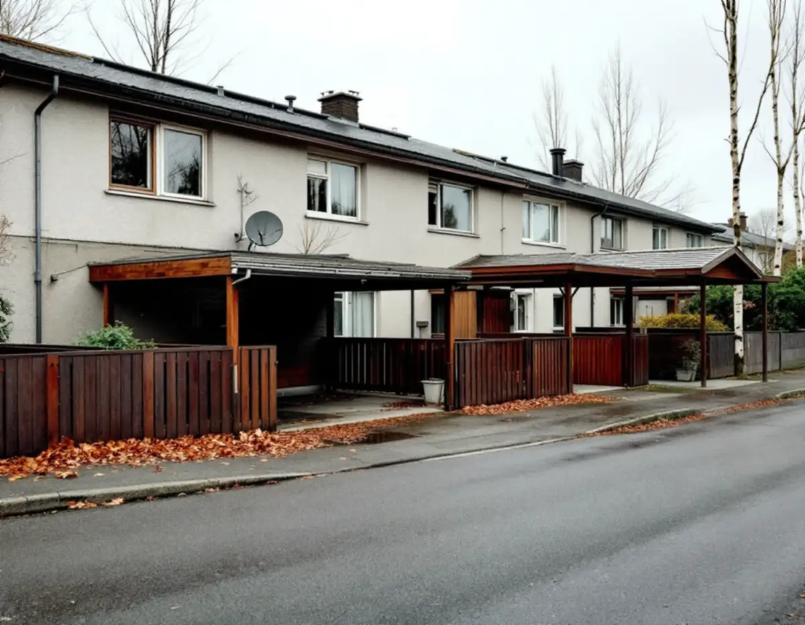
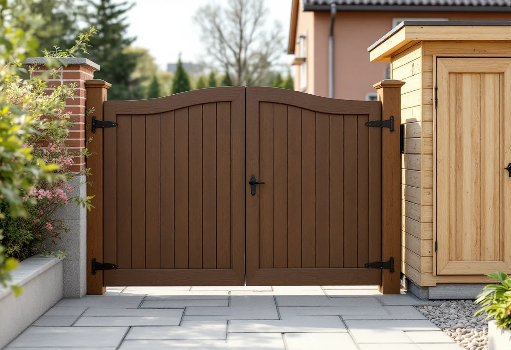

Platsbesök
Vi tittar på huset, längan och grannarnas förråd, grindar och dörrar.
Mycket av Järfällas småhusbebyggelse uppfördes i grupper, där husen gjordes lika för att bilda en helhet. Kommunens kulturmiljöplan visar hur förgårdar, carportar och förråd ingår i den helheten. Geal Entreprenad AB bygger och byter förråd, grindar, ytterdörrar och snickerier i hela Järfälla, med gratis platsbesök och skriftligt kostnadsförslag.

I kulturmiljöplanen för Jakobsberg beskrivs radhusen vid Ekedalsvägen, uppförda av Widmark & Platzer. Radhusen är indragna från gatan och förgårdarna är inbyggda genom att varje hus har carport med grindar och förråd mot gatan. Planen kallar de kringbyggda förgårdarna en alldeles speciell och värdefull karaktär.
För radhusen säger planen att det är viktigt att värna karaktären mot gatan. Byts ett förråd eller en carportgrind i en sådan länga är det därför klokt att göra den nya delen lik grannarnas, i samma mått, samma panel och samma indelning, även om ett lovfritt bygge i sig inte prövas av kommunen.
För villorna längs Fölvägen gäller enligt planen en byggrätt på högst 180 kvadratmeter inklusive uthus, på tomter om minst 600 kvadratmeter, och eventuella tillbyggnader bör läggas åt baksidan.

Villorna vid Hovvägens norra del uppfördes kring 1960 av Svenska Industribyggen AB. De är souterränghus åtskilda av en smal gränd, och därför kallas de grändvillor. Enligt kulturmiljöplanen är området i stort sett oförändrat sedan byggnadstiden, och bland de mindre förändringar som har skett nämns byte av garageportar och ytterdörrar.
Planen noterar också att byggnadsplanen tillåter mindre förråd på förgårdsmarken, men att förgårdarna är så små att ett förråd i praktiken skulle bygga för entréer eller fönster. Ska en ytterdörr eller garageport bytas i en sådan miljö väljer vi en modell som liknar den ursprungliga, och tittar först på grannarnas dörrar.
Kring Betselvägen beskriver planen ett mindre område med villor från 1950-talet som inte är gruppbyggda utan uppförda för varje byggherre. Husen har två plan och hade ursprungligen garage i bottenvåningen, och låga garagebyggnader har ofta byggts till senare. Där är förutsättningarna för en ny port, ett förråd eller ett skärmtak andra än i radhuslängorna, eftersom husen redan skiljer sig åt.
Kommunens sida om bygglovsbefriade åtgärder räknar upp bland annat komplementbyggnad, tillbyggnad samt mur, plank och altan. Lovbefriade åtgärder som inte är undantagna från detaljplanen får göras med en avvikelse om avvikelsen är liten och inte motverkar planens syfte. Närhet till gräns, järnväg eller kulturmiljö kan ändå kräva bygglov.
Kommunen påminner om att du måste hålla dig inom den totalt tillåtna ytan för komplementbyggnader och tillbyggnader. Påverkas bärande konstruktion, brandskydd, vatten, avlopp eller ventilation väsentligt kan anmälan och startbesked krävas, även när bygget är lovfritt.
För alla lovfria åtgärder går det att söka frivilligt lov. Kommunen beskriver det som en trygghet inför en större investering, till exempel en tillbyggnad på radhusets baksida.
Måtten kommer från Boverket: en lovfri tillbyggnad av ett småhus får vara högst 30 kvadratmeter sammanlagt och inte högre än husets taknock, och tidigare skärmtak, altaner och attefallstillbyggnader räknas in. Inom detaljplan får en komplementbyggnad som ett förråd vara högst 30 kvadratmeter, och alla tillsammans högst 45, med en nockhöjd på högst 4 meter.
Många radhus i Järfälla ägs som bostadsrätt, och då ser rotavdraget annorlunda ut. Enligt Skatteverket ger det inget avdrag att bygga eller bygga om en altan eller balkong i en bostadsrätt, inte heller att glasa in den eller att byta ytterdörr. Att byta och reparera innerdörrar och deras lås och handtag ger däremot avdrag, liksom arbete på insidan av ytterdörren.
I ett radhus med äganderätt gäller småhusreglerna: dörrar, dörrlås och handtag ger avdrag, och en altan ger avdrag om den byggs ihop med huset. Fråga också föreningen innan du ändrar något utvändigt.
Vi tittar på huset, längan och grannarnas förråd, grindar och dörrar.
Vi stämmer av om huset är bostadsrätt eller äganderätt, eftersom det styr rotavdraget.
Vi går igenom detaljplan, tidigare lovfria byggen och om anmälan behövs.
Du får ett skriftligt förslag med arbete och material på separata rader.
Förråd, grind, dörr eller altan byggs i mått och utförande som passar längan.
Vi går igenom resultatet med dig och lämnar underlag att spara.
Avdraget är 30 procent av arbetskostnaden, högst 50 000 kr per person och år och högst 75 000 kr tillsammans med rutavdrag, enligt Skatteverket. Material och resor ingår inte.
Att bygga ett nytt fristående förråd eller garage ger inget avdrag, men en tillbyggnad där minst 75 procent av en sida sitter ihop med husets yttervägg kan göra det. Vi drar avdraget direkt på fakturan.
Om förrådet, grinden eller dörren ska matcha resten av längan, hur mycket av det gamla som rivs och om underlaget håller påverkar mest. Platsbesöket är gratis och du får ett skriftligt kostnadsförslag.
Altan, väggar, dörrar och inredning.
Snickare i Stockholm →Takbyte, takbesiktning och plåtarbeten.
Takläggare i Järfälla →Jakobsberg, Viksjö och Kallhäll.
Takrenovering i Järfälla →Förråd, garage och ateljé som blir bostad.
Attefallshus i Järfälla →Planbesked, extra bostad och ansvar.
Byggföretag i Järfälla →Underhållsmålning i rätt tid.
Fasadmålning i Järfälla →Kedjehus, sekelskiftesvillor och parstuga i Stäket.
Fasadrenovering i Järfälla →Bruksvillor, radhus och 70-talsfönster i Järfälla.
Fönsterbyte i Järfälla →Bottenstycken, bleck och vita omfattningar.
Fönsterrenovering i Järfälla →Kedjehus, egnahem och gamla golvskikt.
Golvläggare i Järfälla →Slipa och behandla trappan i huset.
Golvslipning i Järfälla →Kedjehus, radhus och souterräng.
Köksrenovering i Järfälla →Stuprör, skärmtak och plåttak i Järfälla.
Plåtslagare i Järfälla →Radhus, kedjehus och souterränghus.
Badrumsrenovering i Järfälla →Putsade radhus, kedjehus och villor i Järfälla.
Målare i Järfälla →Lovfritt takbyte och papperen du sparar.
Takbyte i Järfälla →Ny tapet på skivväggar i radhus.
Tapetsering i Järfälla →Flytta badet och mät radon.
Totalrenovering i Järfälla →